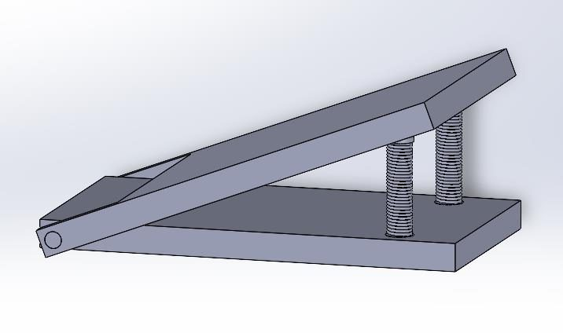

Foot‑Switch Material Handling Conveyor
41.7 Npedal spring force, against an assumed 35 N

Key finding
A 30 N belt friction force sizes the drive (about 15 W, 30 W motor chosen), and 1 mm pedal springs give 41.7 N against an assumed 35 N step, for Rs 8,600 in parts.
- Domain
- Machine design
- Year
- 2024
- Team
- Team of 4
- Course
- ME‑363 Design of Machine Elements
- Tools
- SolidWorks
- Result
- Pedal springs give 41.7 N against an assumed 35 N
Summary
What
Component sizing and CAD assembly of a belt conveyor that carries a 100 N load over 1.5 m and starts from a foot pedal.
Key finding
A 30 N belt friction force sizes the drive (about 15 W, 30 W motor chosen), and 1 mm pedal springs give 41.7 N against an assumed 35 N step, for Rs 8,600 in parts.
Results
- 30 W belt drive sized for a 100 N load over 1.5 m.
- Parts cost Rs 8,600.
Problem
Design a conveyor that carries a 100 N load over 1.5 m, powered through a foot switch, with a CAD assembly and calculations that size the components for the load.
Method
- Belt friction: PVC belt friction coefficient 0.3 gives a 30 N friction force. Belt speed is 0.5 m/s, pulley diameter 0.35 m, motor about 30 rpm, and the belt is 0.3 m wide and 0.01 m thick (data sheet).
- Motor torque T = f × r = 5.25 N·m. The power is about 15 W from the friction force and belt speed (30 N × 0.5 m/s), and a 30 W motor was chosen to avoid over‑engineering.
- Pedal springs: hard drawn wire of 1 mm diameter, spring constant 1 N/mm, Bergstrasser factor 1.2, spring force 41.7 N against a 35 N human step, free length 35 mm, 29 active turns and pitch 1.14 mm.
- SolidWorks assembly with pulleys on a frame, a belt, and a pedal switch of two plates rotating over springs sized to foot dimensions.


Equations
- EQ. 1
- EQ. 2
- EQ. 3
- EQ. 4
- EQ. 5
- EQ. 6
Results
| Quantity | Value |
|---|---|
| Friction force | 30 N |
| Torque | 5.25 N·m |
| Power | about 15 W, from the friction force and belt speed |
| Selected motor | 30 W was chosen, to avoid over‑engineering |
| Spring force | 41.7 N, which exceeds the 35 N step force |
| Part | Cost |
|---|---|
| PVC belt | Rs 1,700 |
| 30 W motor | Rs 1,300 |
| Two motorised pulleys | Rs 4,800 |
| Two springs | Rs 800 |
| Parts total | Rs 8,600 |
The CAD shows the intended belt motion and a pedal with springs at each end.
Limitations
- Calculation and CAD only. No prototype was built or tested.
- The spring check uses an assumed 35 N step force.
Tools
- SolidWorks